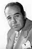
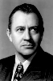

Country:United States, 91 minutes
Spoken languages:English
Genres:Action, Crime
Director(s):Henry Levin
Writer(s):Seton I. Miller, William Bowers, Fred Niblo Jr.
Video Codec:Unknown
Number: 2511


Certification:
Storyline:
A prison warden fights to prove one of his inmates was wrongly convicted.
Cast:  


Medium: Original DVD,
Comments: Part of: Tales From The Prison Yard - 6 Film Collection
Loaned: No
Aspect ratio: Unknown